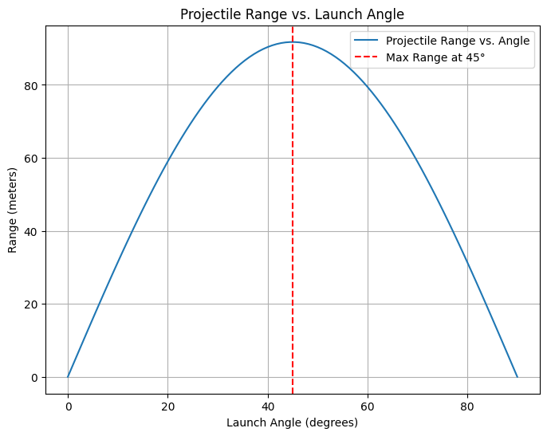

Problem 1
Investigating the Range as a Function of the Angle of Projection
Understanding Projectile Motion
Projectile motion, while seemingly simple, offers a rich playground for exploring fundamental principles of physics. The problem is straightforward: analyzing how the range of a projectile depends on its angle of projection. Yet, beneath this simplicity lies a complex and versatile framework.
The Mathematics Behind Projectile Motion
The equations governing projectile motion involve both linear and quadratic relationships, making them accessible yet deeply insightful. The motion can be broken down into two independent components: - Horizontal Motion: Governed by uniform velocity, assuming no air resistance. - Vertical Motion: Influenced by gravitational acceleration, leading to a parabolic trajectory.
Key Equations
- Time of Flight:
$$ T = \frac{2v_0 \sin \theta}{g} $$ - Horizontal Range:
$$ R = \frac{v_0^2 \sin 2\theta}{g} $$ - Maximum Height:
$$ H = \frac{v_0^2 \sin^2 \theta}{2g} $$
Where: - \( v_0 \) = Initial velocity - \( \theta \) = Angle of projection - \( g \) = Gravitational acceleration
The Role of Free Parameters
What makes this topic particularly compelling is the number of free parameters involved in these equations, such as: - Initial Velocity: Determines the overall reach of the projectile. - Gravitational Acceleration: Affects the downward pull, varying across planetary conditions. - Launch Height: Alters the time of flight and final impact position.
Real-World Applications
These parameters give rise to a diverse set of solutions that can describe a wide array of real-world phenomena, including: - The arc of a soccer ball during a free kick. - The flight path of a basketball shot. - The trajectory of a rocket launched into space.
Understanding projectile motion is not just an academic exercise but a crucial principle in engineering, sports science, and aerospace technology.
Equations of Motion
The motion of a projectile in a vacuum (neglecting air resistance) is governed by:
where:
- v0 is the initial velocity,
- \(\theta\) is the launch angle,
- \(g\) is the acceleration due to gravity,
- \(t\) is the time.
The range \(R\) (horizontal distance) is obtained by solving for \(t\) when \(y = 0\):
\(R = \frac{v_0^2 \sin(2\theta)}{g}\)
Family of Solutions
- Different initial velocities (( v_0 )) yield higher or lower trajectories.
- Varying launch angles (( \theta )) create different parabolic paths—steeper angles mean greater height but shorter horizontal reach.
- Gravity ( g ) affects descent—on planets like Mars (( g = 3.7 ) m/s²), the projectile would have a longer range than on Earth.
Graphical Representations of Range vs. Angle The range equation (neglecting air resistance) is: [ R = \frac{v_0^2 \sin 2\theta}{g} ]
Python Code to Plot Range vs. Angle
import numpy as np
import matplotlib.pyplot as plt
# Parameters
v0 = 30 # Initial velocity in m/s
g = 9.81 # Gravitational acceleration in m/s²
theta = np.linspace(0, 90, 100) # Angle from 0° to 90°
# Compute range for each angle
R = (v0**2 * np.sin(np.radians(2 * theta))) / g
# Plot
plt.figure(figsize=(8,6))
plt.plot(theta, R, label="Projectile Range vs. Angle")
plt.axvline(x=45, color='r', linestyle='--', label="Max Range at 45°")
plt.xlabel("Launch Angle (degrees)")
plt.ylabel("Range (meters)")
plt.title("Projectile Range vs. Launch Angle")
plt.legend()
plt.grid()
plt.show()

📌 This graph will: - Show range peaking at 45° (ideal case). - Demonstrate how increasing ( v_0 ) scales up range. - Shift if gravity ( g ) is altered (e.g., Moon vs. Earth).
imitations & Realistic Adjustments ✅ Key Assumptions in the Ideal Model: - No air resistance—real projectiles experience drag, which shortens range. - Launch and landing at same height—uneven terrains require modifications. - Neglecting wind effects—real-world projectiles are influenced by crosswinds. 🚀 More Realistic Factors: - Air Resistance (Drag Force ( F_d )) - Introduce ( F_d = C_d v^2 ), where ( C_d ) is the drag coefficient. - Would shift peak angle below 45° due to extra deceleration. - Wind Influence - Headwinds shorten range; tailwinds extend it. - Requires vector velocity adjustments. - Variable Launch Heights - If launching from an elevated position, the range equation must include height terms. - Results in longer descent phases.